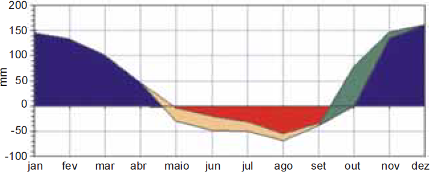
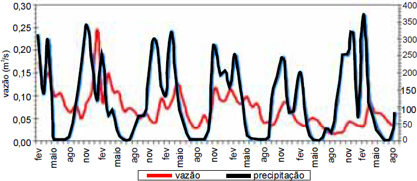

balanço hídrico da cidade X

Gráfico I
totais de precipitação pluvial e de vazão do rio Y

Gráfico II
Com uma área de 6.000 km2, o município X apresenta inúmeras nascentes, que originam rios cristalinos,
constituindo um grande potencial hídrico da região. A degradação dos ecossistemas onde estão essas nascentes
seguramente causará a diminuição do volume de água do rio Y, que corta a cidade.
Com base nessas informações, na análise do balanço hídrico do município X (gráfico I), considerada a média de 30 anos,
bem como na variação temporal dos totais de precipitação pluvial, ao longo de seis anos, no município X, e na variação
temporal da vazão do rio Y durante os mesmos seis anos (ambas no gráfico II), julgue os itens seguintes.
-
O período seco, no município X, diminui sensivelmente o aporte de água do rio Y, o que exige maior controle não só
na distribuição como também na fiscalização dos poços artesianos, cuja proliferação poderá causar grandes danos
ao abastecimento em geral, visto que, a cada perfuração realizada, diminui a pressão subterrânea que regula o fluxo
da água nas nascentes.
-
No gráfico II, pode-se observar que o potencial hídrico do rio Y acompanha a sazonalidade das chuvas e apresenta
o limite de consumo de suas águas para abastecimento humano, comércio, agricultura e outros usos. O limite inferior
expressa o ponto crítico de controle da demanda para se evitar colapso nos sistema de abastecimento.
-
O potencial hidrológico do município X, ao longo do ano, apresenta-se uniforme; portanto, a disponibilidade de água
para os diversos usos humanos é garantida mesmo com as intervenções humanas na região.
-
O comportamento da precipitação pluvial determina a curva de vazão do rio Y, com um pequeno deslocamento no
tempo, devido à dinâmica de infiltração das águas superficiais no solo até serem incorporadas ao curso d’água, como
demonstrado no gráfico II.
-
A variabilidade temporal da precipitação pluvial no município X, representada no gráfico II, pode ser considerada baixa,
característica identificável no balanço hídrico, mostrado no gráfico I.
Estão certos apenas os itens
-
I e II.
-
III e IV.
-
I, II e IV.
-
II, III e V.
-
III, IV e V.